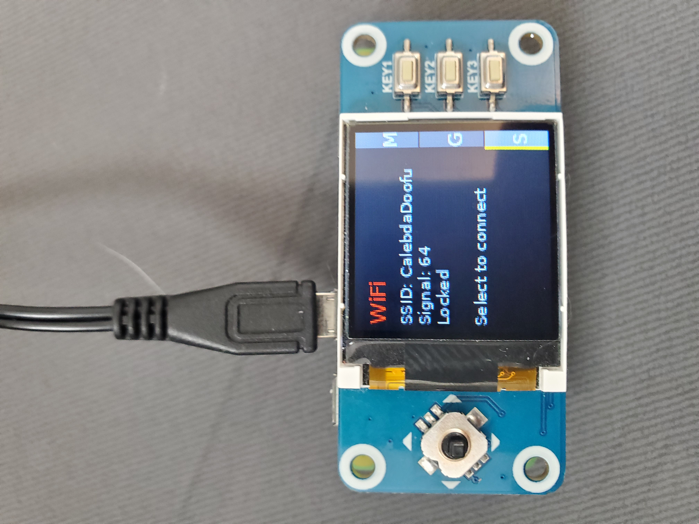
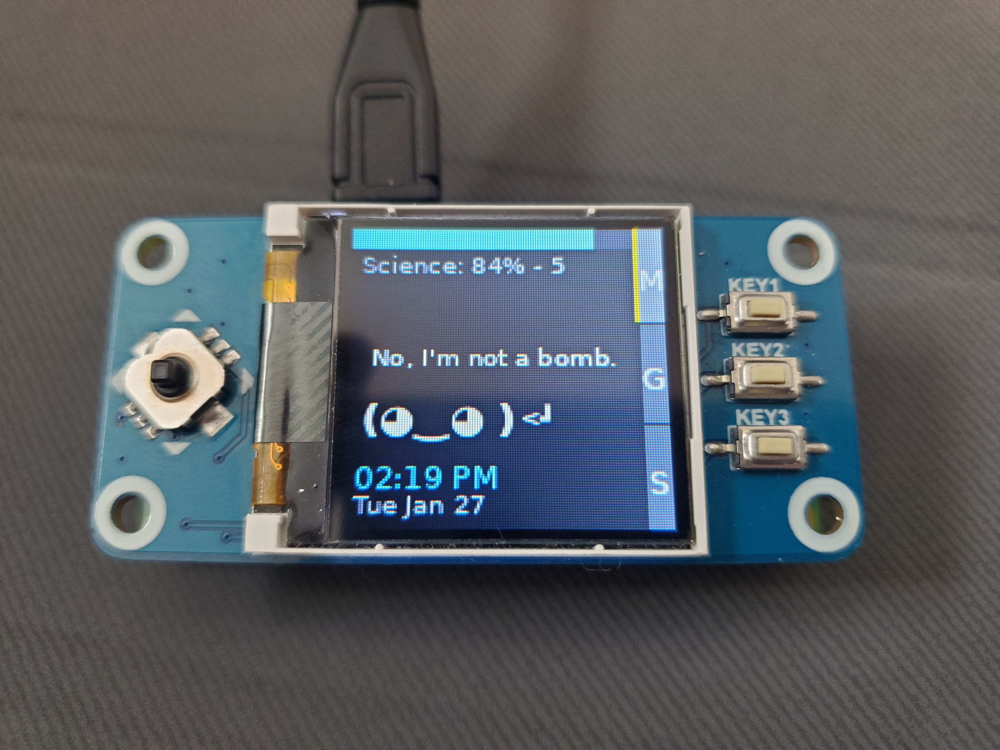
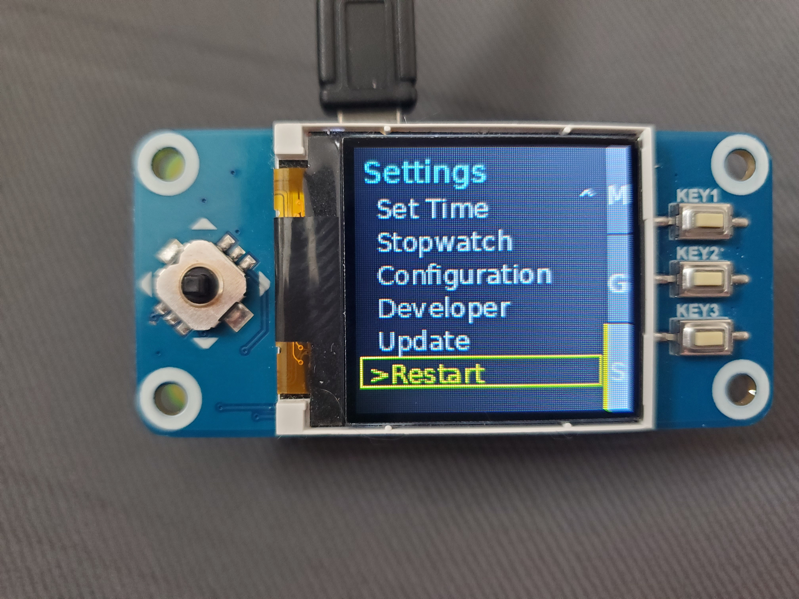

How It Works
guide to using your Timagotchi
Getting Started
Read the docs if you haven't already
The Waveshare 1.44" LCD HAT includes a joystick and three function keys:
- Joystick: Right- Select, Left- Back, Up/Down- Navigate
- Key1 (top right): Main Page
- Key2 (middle right): Grades
- Key3 (bottom right): Settings


Main Page
The Main Page displays:
- Current period and time remaining
- Animated character with expressions
- Progress bar (configurable mode)
- WiFi status indicator

Themes
Customize the look of your Timagotchi:
- Navigate to Settings → Theme
- Use joystick to browse available themes
- Select a theme to apply it immediately
- Your choice is saved automatically
Themes change colors for background, text, accents, sidebar, and dividers.

Canvas Grades Setup
View Your Grades

Create a Canvas API token
- Log into Canvas in a browser.
- Open Account (left sidebar) then Settings.
- Scroll to Approved Integrations and click New Access Token.
- Give it a purpose name like "Timagotchi" and optionally set an expiration date.
- Click Generate Token, then copy the token right away.
Save the token in Code/canvas_config.json as api_token. The base_url should match your Canvas domain, like https://yourschool.instructure.com or your school specific Canvas URL.
Understanding Schedule Features
A/B Day Scheduling
If your school uses alternating A/B day schedules:
- Auto Mode: Device automatically tracks which day type it is
- Manual Mode: Manually set A or B day in Settings → A/B Day
- Preset Rotation: Schedule cycles through configured presets

Progress Bar Modes
Change how time is visualized:
- Time in Class: Shows progress through current period
- Time in Day: Shows progress through entire school day
- Lunch Countdown: Shows time remaining until/during lunch
Change mode in Settings → Progress Bar
Battery Life
To maximize battery life on portable power:
- The Pi Zero draws minimal power (~100-150mA)
- Expected runtime: 8-12 hours on 8kmah battery
- Dim screen brightness in Settings for longer life
- Consider powering from a phone battery if you have no battery bank
Common Issues
- Buttons not responding: Verify GPIO permissions and connections
- Wrong schedule: Run configure_schedule.py to reconfigure
- Canvas not loading: Check canvas_config.json has valid API token
- Time sync issues: Ensure WiFi connection or manually set time